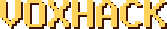
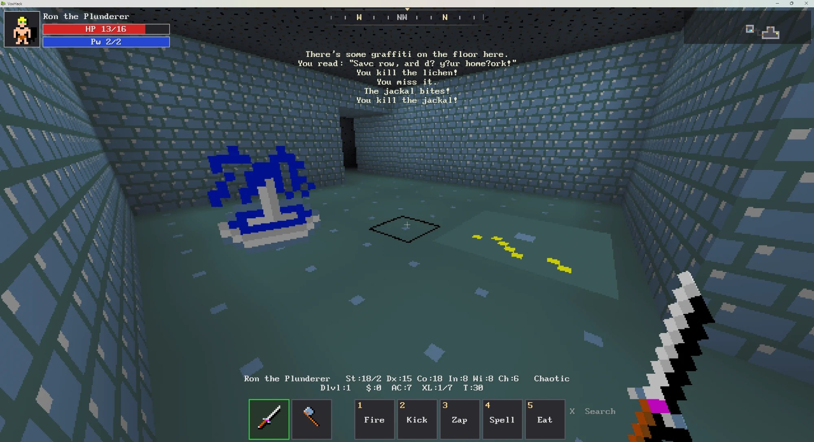

NetHack 3.7 in first person. Walk the Mazes of Menace in a 3D voxel world, where NetHack still decides every rule and every roll of the dice.
Free. Windows 10/11, 64-bit. Early alpha. Also on itch.io, with comments and updates.

NETHACK
Recently, you have begun to find yourself unfulfilled and distant in your daily occupation. Strange dreams of prospecting, stealing, crusading, and combat have haunted you in your sleep for many months, but you aren't sure of the reason. You wonder whether you have in fact been having those dreams all your life, and somehow managed to forget about them until now. Some nights you awaken suddenly and cry out, terrified at the vivid recollection of the strange and powerful creatures that seem to be lurking behind every corner of the dungeon in your dream. Could these details haunting your dreams be real? As each night passes, you feel the desire to enter the mysterious caverns near the ruins grow stronger. Each morning, however, you quickly put the idea out of your head as you recall the tales of those who entered the caverns before you and did not return. Eventually you can resist the yearning to seek out the fantastic place in your dreams no longer. After all, when other adventurers came back this way after spending time in the caverns, they usually seemed better off than when they passed through the first time. And who was to say that all of those who did not return had not just kept going?
Asking around, you hear about a bauble, called the Amulet of Yendor by some, which, if you can find it, will bring you great wealth. One legend you were told even mentioned that the one who finds the amulet will be granted immortality by the gods. The amulet is rumored to be somewhere beyond the Valley of Gehennom, deep within the Mazes of Menace. Upon hearing the legends, you immediately realize that there is some profound and undiscovered reason that you are to descend into the caverns and seek out that amulet of which they spoke. Even if the rumors of the amulet's powers are untrue, you decide that you should at least be able to sell the tales of your adventures to the local minstrels for a tidy sum, especially if you encounter any of the terrifying and magical creatures of your dreams along the way. You spend one last night fortifying yourself at the local inn, becoming more and more depressed as you watch the odds of your success being posted on the inn's walls getting lower and lower.
In the morning you awake, collect your belongings, and set off for the dungeon. After several days of uneventful travel, you see the ancient ruins that mark the entrance to the Mazes of Menace. It is late at night, so you make camp at the entrance and spend the night sleeping under the open skies. In the morning, you gather your gear, eat what may be your last meal outside, and enter the dungeon...
From the NetHack Guidebook, by the NetHack DevTeam
Point at any monster, item, fountain or trap and press F2: its NetHackWiki page opens right in the game, formatting, pictures and all. Only what you know: an unidentified potion opens the general Potion page.
The whole of NetHack 3.7 runs the game: every monster, item, trap, prayer and death is NetHack's own.
Move freely, look around, swing at what's in front of you. Time crawls while you stand still and runs as you move.
Every level is built in 3D from NetHack's own map, with special levels hand-made as places of their own.
Aim with the crosshair, act with a right-click wheel, and keep NetHack's command line one key away.
Sound effects for NetHack's events, music for each part of the dungeon, and skies above the open levels.
Unzip and play. Your game, settings and high scores live in the game's own folder.
Create Play Shortcut.bat, or Launchers\Play VoxHack.bat.| WASD + mouse | Move and look |
| Left click | Attack what's in reach under your crosshair |
| Shift + left click | Fire your quivered ammo where you look |
| Right click | Act on what you point at (open, climb, talk); hold for an action wheel |
| Shift / Ctrl / Alt / E | Hold for other wheel options |
| 1 - 5 | Fire, Kick, Zap, Spell, Eat |
| R / X | Pick up / Search |
| I / Z | Inventory / the big map |
| T | NetHack's command line (#pray, 20s...) |
| F2 | Look it up on NetHackWiki: the page for what you're pointing at, in the game |
VoxHack is free software. The source code is on GitHub, with the modified NetHack and Luanti engines. Bugs and ideas are welcome in Issues or on the itch.io page.